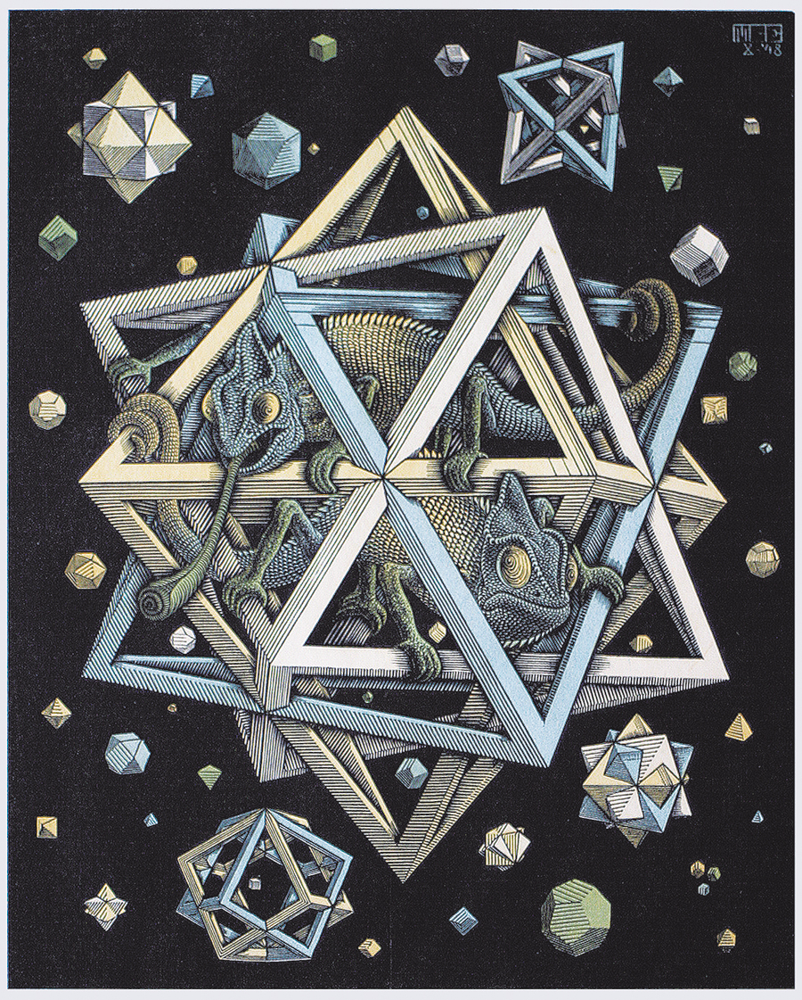

Conclusión
Comunicación
Es evidente que la comunicación con los profesores ha mejorado mucho gracias a la tecnólogoía. También se han visto mejorados los plazos y métodos de entrega, lo cual es beneficioso. Un avance en la comunicaciónes siempre beneficioso tanto para el profesor como para el alumno. Esto además ayuda a mitigar el problema de la diferencia de métodos entre alumno y profesor (mencionada anteriormente en el planteamiento del problema.
Efectividad
Muchas de las nuevas tecnologías son muy fáciles de utilizar y están a la orden del día para los alumnos. Esto hace que no haya que perder mucho tiempo aprendiendo a usarlas y que se optimice más el tiempo en el que verdaderamente se le está sacando partido a la herramienta. Es decir, por norma general el uso de las nuevas tecnologías es efectivo y se le saca provecho. Pero el ser eficiente no lo hace necesariamente más efectivo. Habrán videos y programas de internet que despejen más dudas que un antiguo libro de texto pero igualmente ocurrirá en el otro sentido. La clave está en saber equilibrar su uso y en tener buenas fuentes a las que recurrir.
Opinión personal
Las nuevas tecnologías traen más pros que contras pero no han de interpretarse como sustitutivas de las tradicionales sino como complementarias. Es mejor utilizarlas que no utilizarlas puesto que sin ellas perderíamos una valiosa información, pero, esto no hace que debamos utilizar únicamente nuevas tecnologías puesto que lo mismo ocurriría si no utilizaramos las antiguas. La clave esta en saber optimizar el uso de ambas y sacarles el máximo partido a las oportunidades que nos ofrecen ambas. Los libros y los profesores nos ofrecerán grandes cantidades de conocimiento, así como lo harán youtube, internet y los ordenadores.
|

|
"STARS" (1948)
Otros aspecto evidente que relaciona a Escher con las matemáticas es el empleo de poliedros en sus dibujos. De esta obra, "Stars" (1948), el propio Escher dijo: "Cuerpos regulares sencillos, dobles y triples flotan como estrellas por el vacío. En el centro se encuentra una construcción compuesta por tres octoedros regulares". Aparecen también otro tipo de poliedros en sus obras "Order and Chaos" (1950) y "Gravitation" (1952).
Menu
Planteamiento problema
Antiguas tecnologías
Nuevas Tecnologías